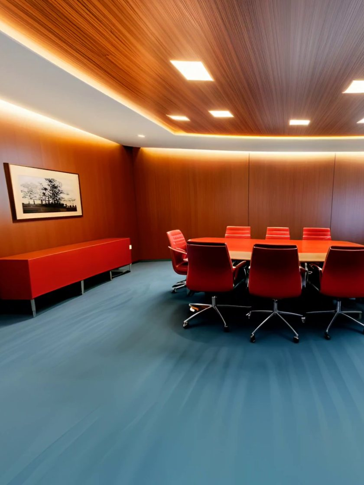
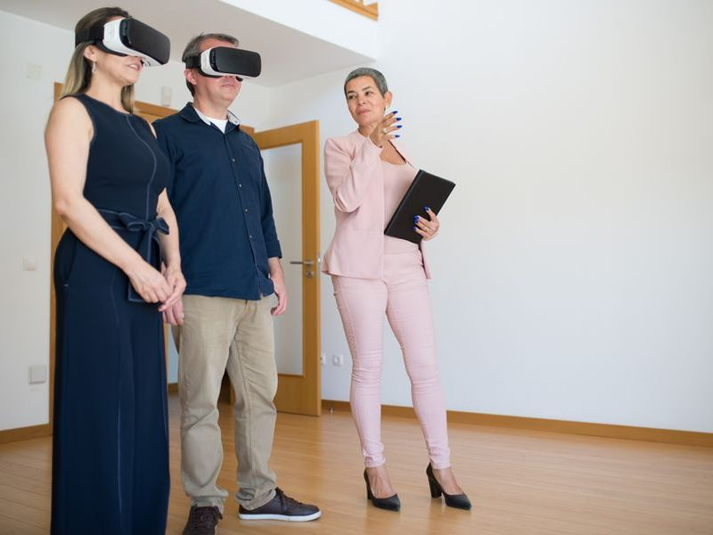
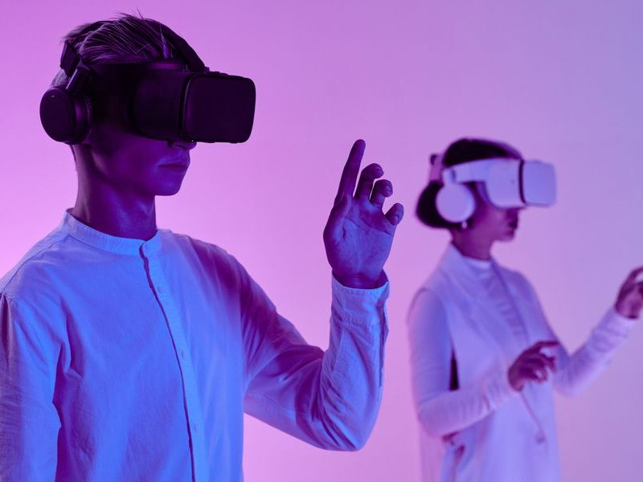
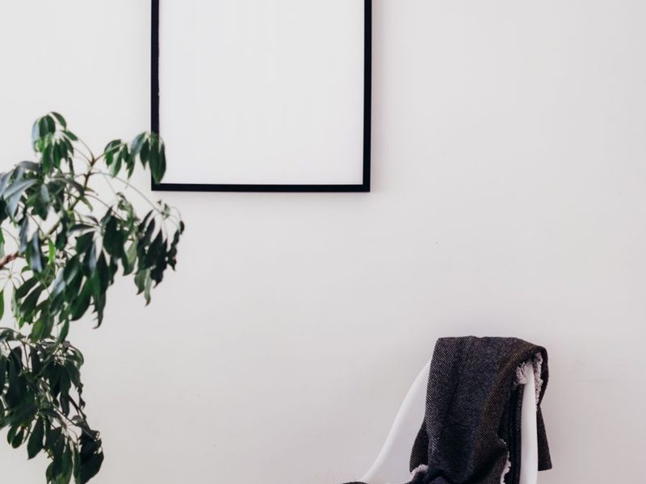
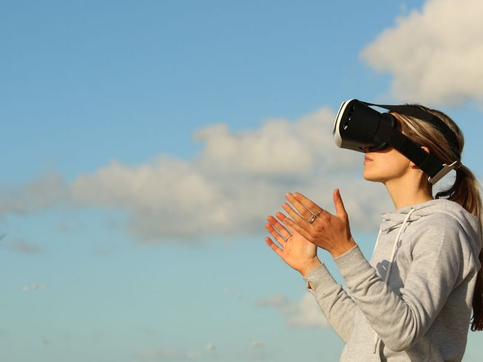

1Pinch to draw
Left and right pinches set opposite corners; moving them sets size and tilt.
Headsets switch between mixed reality and VR with a menu button and a fade. The change is instant, and you can’t see where you are going before you are there.
My contribution is a reality switch you draw. Two pinches open a window in the air, you look through before you leave, then walk through it. The same gesture brings you back, so it works in both directions.
Four short moments from the headset. Each window carries its own world, and the same gesture works in both directions.
Left and right pinches set opposite corners; moving them sets size and tilt.
Crossing the window switches you into that world.
Several windows can show different worlds side by side.
In VR, the same pinch opens a window onto your real room.



Everything runs on the PICO 4 Ultra. Each world is a 360° image wrapped on a depth shell, so it shifts slightly as you move your head.
A stencil mask shows the world only inside the window and passthrough outside it. When your head crosses the window plane, with a small buffer so it doesn’t flicker, the switch is committed.
Directions this prototype opens up. None of them are tested yet.

Compare design options side by side in the real room.

Crossing a doorway changes the story world.

Look into a distant place from your own room.

Inspect a condition before stepping into it.
Photos: Pexels